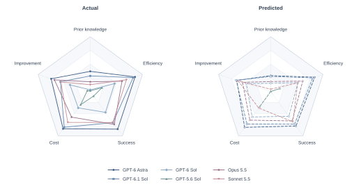
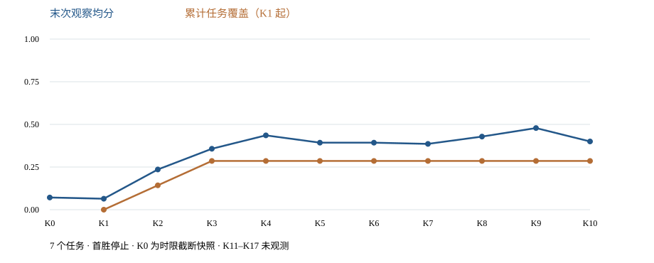

EXPERIMENT NOTEBOOK · 2026.10.16 · SIX-MODEL REFERENCE & PREDICTION
从一次尝试，
到跨轮求解。
Progress, coverage & the cost of solving.
最新结果比较 GPT-6 Astra / GPT-6.1 Sol / GPT-6 Sol / GPT-5.6 Sol / Opus 5.5 / Sonnet 5.5 的五轴工作参考与 Benchmark 预测。采用 2026-10-16 v3 数据包，另纳入 Gemini 4 的 7 任务 K0–K10 部分快照。
01 / LATEST RESULTS · 2026.10.16 · V3
六模型：参考画像与 Benchmark 预测
同一份 v3 数据，30 个轴值及 30 个预测值。K0 使用每任务 3 次 Context 重复；五轴仍按 A1–A5 顺序，Cost 越高表示预算节余越多。Gemini 4 部分快照见下方独立面板，未纳入这 30 对参考/预测值。

五轴参考值 / 预测值
每格顺序为 Actual / Predicted；† 含拟合参考或未成功假设。保留原始精度的数据见 CSV。
| 模型 | A1 Prior knowledge | A2 Efficiency | A3 Success | A4 Cost | A5 Improvement |
|---|---|---|---|---|---|
| GPT-6 Astra | 0.3676 / 0.2896 | 0.8594 / 0.8420 | 0.8509 / 0.7809 | 0.8429 / 0.8104 | 0.7500 / 0.6508 |
| GPT-6.1 Sol | 0.2843 / 0.2751 | 0.8224 / 0.8035 | 0.7028 / 0.7370 | 0.8081 / 0.7357 | 0.5714 / 0.6635 |
| GPT-6 Sol | 0.0306 / 0.1495 | 0.4658 / 0.5216 | 0.4722 / 0.5610 | 0.3718 / 0.5759 | 0.3889 / 0.4684 |
| GPT-5.6 Sol | 0.0120 / 0.0000 | 0.2247 † / 0.1761 | 0.1037 † / 0.0000 | 0.3013 † / 0.3444 | 0.0556 † / 0.0000 |
| Claude Opus 5.5 | 0.1769 / 0.1817 | 0.6091 / 0.6131 | 0.7444 / 0.6654 | 0.5794 / 0.6476 | 0.6875 / 0.5408 |
| Claude Sonnet 5.5 | 0.1241 / 0.0407 | 0.6946 / 0.5181 | 0.7006 / 0.6849 | 0.6984 / 0.3732 | 0.5625 / 0.6249 |
逐轴预测误差
MAE 为本包六模型留一预测的平均绝对误差，含拟合参考值；方法选择也使用了这些误差。
| 轴 | 方法 | 特征集 | MAE |
|---|---|---|---|
| A1 Prior knowledge | PLS (1 component) | legacy26 | 0.0511 |
| A2 Efficiency | Perception Ridge | legacy26 | 0.0535 |
| A3 Success | Spatial Ridge | core11 | 0.0653 |
| A4 Cost | PLS (1 component) | legacy26 | 0.1242 |
| A5 Improvement | Spatial Ridge | core11 | 0.0892 |
逐模型图与下载


下方内容为 2026-10-15 历史快照。新包未提供六模型逐轮结果、更新后的任务明细或成本日志，因此不把新 K0 或预测值拼接进旧曲线，也不沿用旧区间解释新参考值。旧快照中 Sonnet 的未完成状态只描述旧记录。
GEMINI 4 · PARTIAL SNAPSHOT
Gemini 4：7 任务，观察至 K10
Gemini 4 已纳入本站，当前为独立的部分结果。62 条有评分记录、17 条无终局评分尝试；2/7 个任务成功（28.57%），另外 5 个任务观察至 K10 尚未成功。完整 K17 五轴和 Benchmark 预测尚缺。

| 任务 | K0 暂存分数 | 最后观察轮 | 最后分数 | 首次成功轮 | 无终局评分尝试 |
|---|---|---|---|---|---|
| arrange_largest_number | 0.15 | K3 | 1.00 | K3 | 1 |
| cover_blocks | 0.00 | K2 | 1.00 | K2 | 1 |
| deposit_coin | 0.00 | K10 | 0.20 | 截至 K10 未成功 | 2 |
| fill_pen_holder | 0.10 | K10 | 0.25 | 截至 K10 未成功 | 5 |
| insert_key | 0.00 | K10 | 0.00 | 截至 K10 未成功 | 3 |
| organize_table | 0.25 | K10 | 0.25 | 截至 K10 未成功 | 2 |
| pack_objects_into_box | 0.00 | K10 | 0.10 | 截至 K10 未成功 | 3 |
逐轮均分与覆盖数据
| 轮次 | 末次观察均分 | 累计任务覆盖 |
|---|---|---|
| K0 | 0.0714 | 不适用（Context） |
| K1 | 0.0643 | 0/7 |
| K2 | 0.2357 | 1/7 |
| K3 | 0.3571 | 2/7 |
| K4 | 0.4357 | 2/7 |
| K5 | 0.3929 | 2/7 |
| K6 | 0.3929 | 2/7 |
| K7 | 0.3857 | 2/7 |
| K8 | 0.4286 | 2/7 |
| K9 | 0.4786 | 2/7 |
| K10 | 0.4000 | 2/7 |
HISTORICAL SNAPSHOT · 2026.10.15
历史五模型曲线与四模型附属指标
以下 PROFILE 保留旧版五模型雷达及得分曲线，并有独立五模型开关。其余阶段、覆盖、M68、M72、成本及 M70 保留原四模型已核验快照，尚未填入 GPT-6 Sol 的对应统计。
这里的开关控制原四模型附属指标；PROFILE 内的五模型开关控制新雷达和曲线。表格和分母保持不变。
02 / EXISTING RESULTS
历史已有结果，按五类组织
远程服务器已经产出的指标与原始统计。补齐模型、核对口径和重画图不重复算成新指标。
03 / DERIVED METRICS
历史快照的派生结果
保留一个主编号作为阅读入口；同一指标的不同分量分别写明定义。覆盖 AUC、恢复率与观察改进不代替冻结能力评测。
04 / ABLATION STUDIES
经验来自哪里？
以下为 Astra 的实验条件比较。Sol 6.1、Opus 5.5、Sonnet 5.5 没有匹配消融数据，记为 NA。
05 / METHODS & EVIDENCE
历史快照的适用范围
观察与冻结分开读
K 是求解轮次预算。Su 是更新 u 次后冻结系统的留出成功率。M05 是文档编号。M68 的 Gobs / ΔSobs 直接用 K0–K17 算前后变化；M72 在同一观察曲线上统计增长速度和增量均匀性。旧 Gu=Su(A0)−Su(A5) 仍需冻结对照。
缺失不填零
Sonnet 的 pack_objects_into_box、fill_pen_holder 到 K15，store_tools_in_toolbox 到 K11。deposit_coin 的 K19 成功不计入 K17。原四模型审计追回 37 次额外尝试的会话时长，实际步数和其他无成本目录仍缺；新增记录与旧 37 个非规范绑定并非同一集合。
阶段不等于子目标真值
现行任务代码与 19 个分档指纹一致；历史运行时指纹未全部取得。分数可给出兼容阶段范围，无法完整恢复曾达成 SG、终止保持率或重新加权的 Q。
数据可复核
2026-10-15 旧版五轴雷达和五模型曲线使用 919 个规范回合（新增 GPT-6 Sol 273 个）。其余附属指标保留原四模型 646 个回合。四模型会话表对齐 628 个，2512 个成绩字段一致；另有 80 次额外尝试。原四模型 M72 的 144 个曲线点从规范回合独立重建，图表、表格和 CSV 使用同一结果。首胜停止与未完成快照不构成后续复测。
06 / DIAGNOSTICS & GAPS
历史诊断与尚缺的证据
旧编号继续可追溯。历史三模型或 Sol 5.6 结果保留原样；未重算的条目不冒充四模型完整比较。没有数值的指标显示缺口表。
没有匹配的指标。